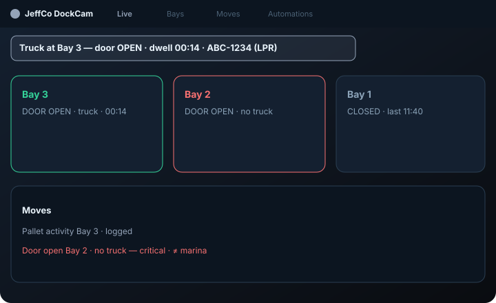
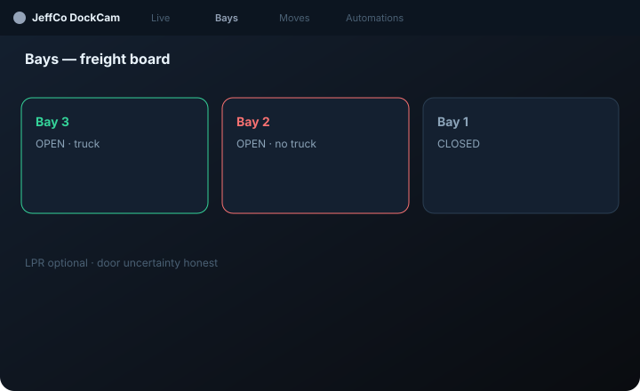
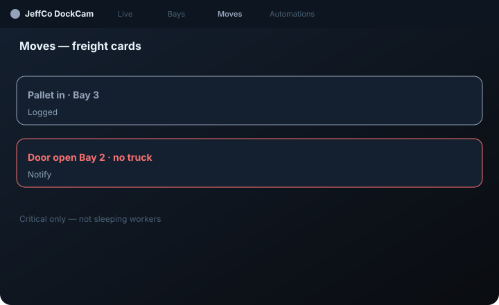

DockCam
Loading-dock freight ops — bays, doors, moves; optional LPR plates — Slice 0 ready.
For dock leads who need bay/door rhythm — freight board, not marina slips.

What it does
DockCam is a freight dock console: Live bay/door overlay, Bays CRM, Moves turn timeline, and English automations for truck-at-bay / door / pallet activity notify.
Truck-at-bay and door open/closed are primary signals; pallet activity is motion/presence hints — not SKU truth. LPR cross-link is optional: plates attach to moves when the sibling plugin is present; DockCam works without plates.
Visual language stays freight — bay, door, trailer, turn time — never BoatDockCam slip/marina metaphors. Unexpected door-open on an empty bay stays firm when armed.
Capabilities
Day-one surface vs Advanced / gated — from Clarity GH Pages pack.
Day-one surface
Live
Day oneBay/door overlay
Bays
Day oneBay CRM + door state
Moves
Day oneTurn / truck presence cards
Automations
Day oneNotify on truck/door (dry-run)
Advanced / gated
Require LPR day one
OutNo
SKU/WMS truth claims
OutForbidden
Marina slip metaphors
OutUse BoatDockCam
How to use it
First-run (wizard)
Add a feed
dock cam, USB, bay clip, or Practice feed.
Draw bays / door ROIs
at least one bay to continue.
Truck or door proof
Continue locked until truck presence or door open/closed.
Optional LPR link
attach plates to moves if plugin present; Skip freely.
Notify me
(dry-run) or Skip; Finish to Live with freight board live.
Add feed
—
Draw bays / door ROIs
—
Truck or door proof
—
Optional LPR link
—
Notify me
(dry-run).
Daily loop
Live bay board
door chips and truck presence
Unexpected door / missed move first
—
Moves timeline; plate quietly on the card if LPR linked
—
Automations after dry-run; optional “and plate on list” when LPR present
—
Badge: unexpected door / cam / notify fail
not sleeping workers
Live bay board
—
Unexpected door / missed move
First.
Moves timeline
Plate if LPR linked.
Automations after dry-run
—
Badge
Unexpected door / cam / notify fail.
Honesty / trust
Freight ≠ marina; LPR optional; door uncertainty.
- Door state — say when uncertain (open/closed/unknown).
- Truck-at-bay = presence, not carrier identity unless LPR.
- Pallet activity = hints ≠ SKU truth.
- Plates from LPR plugin only — don’t invent OCR.
- Keep freight nouns; never BoatDockCam slip language.
- Dry-run ≠ live notify; unbound ≠ error; sleeping ≠ failed.
Screenshots
Domain frames elevated from Design UI mocks + Clarity captions.


Get started
Clone jeffco-dockcam-module · read docs · open setup wizard.